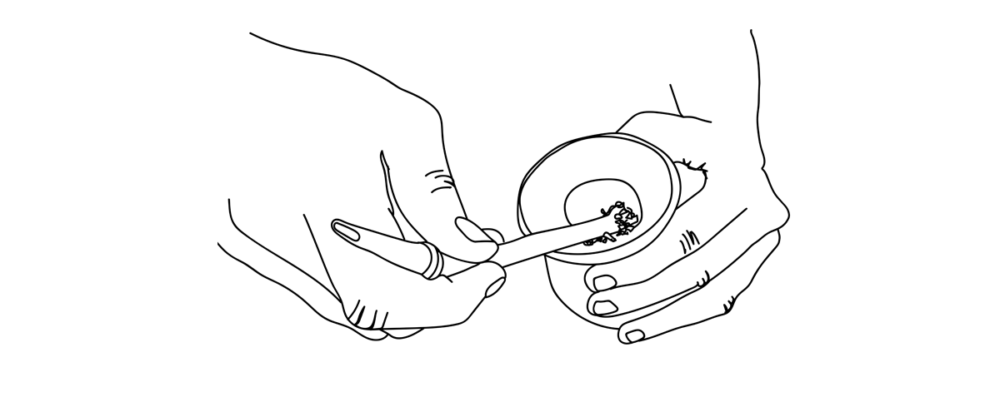

Mate.ando
se entiende la gente
Cuáles son los mejores consejos y recomendaciones para preparar el mejor mate:
- Calentar agua y tratar de que no supere los 80 grados. Lo ideal es que el agua esté entre 70 y 80°, por lo que es clave ponerla en un termo.
- Agregar yerba en el mate. Lo recomendable es ponerle las tres cuartas partes del tamaño del mate. En caso de que el mate quede muy amargo, se le puede agregar una cucharada de azúcar para quitarle el amargor.
- Tapar el mate con una mano y luego invertirlo. Agitarlo durante unos segundos. Luego darlo vuelta y tratar de que la yerba quede recostada en un sector para que se forme un agujero.
- Agregar la bombilla en el hueco húmedo. 
- De acuerdo a los expertos, un buen cebador toma el primer o segundo mate (no suelen ser los mejores) para luego proceder a compartirlo con otra persona.
- Es clave no mover la bombilla y no mover la yerba para que el mate dure varias rondas y no haya que cambiarla todo el tiempo.
- ¡Listo! Ya podés tomar unos buenos mates solo o con quien más gustes.